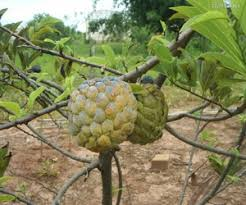
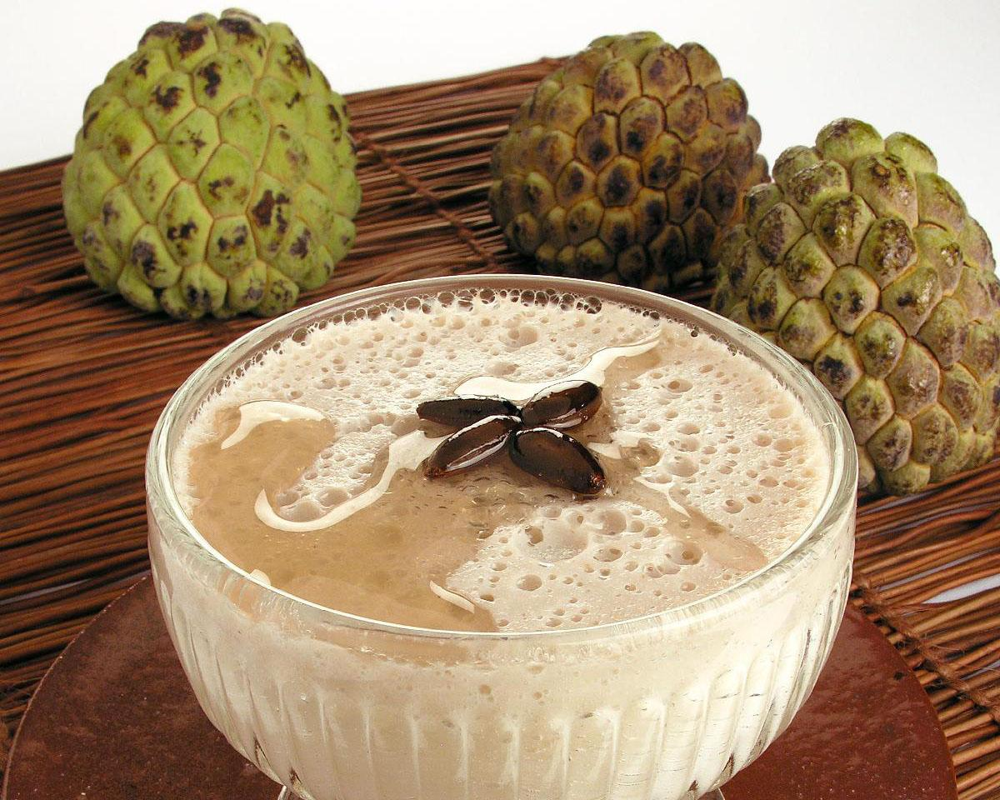
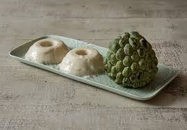
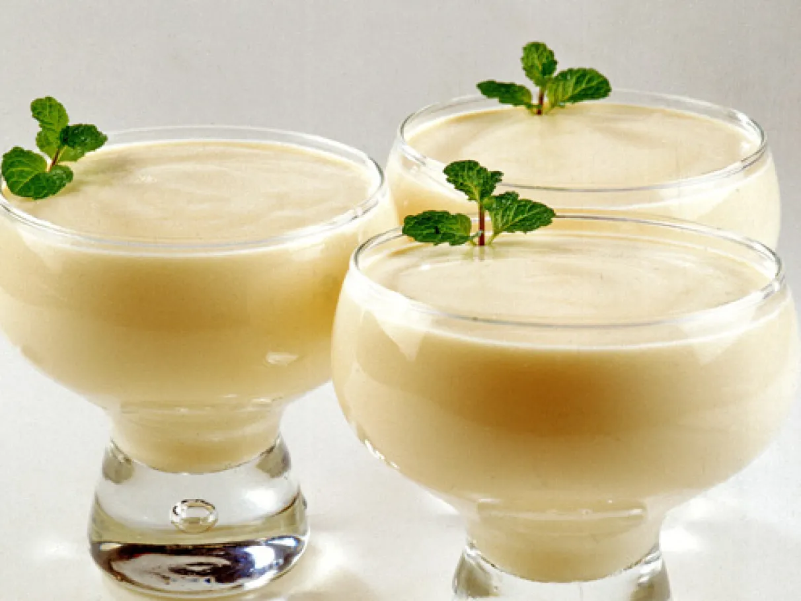

A fruta-do-conde é originária da América Central e do Caribe (Antilhas), em regiões tropicais úmidas. Foi introduzida no Brasil em 1626, na Bahia, pelo governador Diogo Luís de Oliveira (Conde de Miranda), o que originou o nome popular “fruta-do-conde”. De lá, espalhou-se para o Oriente (Filipinas e Índia) pelos espanhóis e portugueses. No Brasil, é cultivada em diversas regiões tropicais e subtropicais, sendo considerada exótica naturalizada.

O plantio é feito preferencialmente no início da estação chuvosa (para sequeiro) ou o ano todo com irrigação. Usa-se sementes (germinação em 35-50 dias) ou enxertia (mais uniforme). Covas de 40x40x40 cm ou maiores, com adubação orgânica (esterco) e mineral. Espaçamento recomendado: 4 m x 3 m ou 5 m x 3 m. Solo bem drenado, pH 5,5-6,5, profundidade mínima 1 m. A planta inicia produção aos 3-4 anos. Colheita ocorre 90-180 dias após a polinização, dependendo da região e época (maior produtividade com manejo). No Brasil, produção principal de janeiro a maio, mas irrigação permite safras fora de época no semiárido.
A floração ocorre principalmente na primavera e início do verão (setembro a novembro no Sudeste/Centro-Oeste), associada ao final da estação seca ou após poda de produção. As flores têm dicogamia protogínica (fase feminina primeiro, depois masculina), o que dificulta a autopolinização. A antese (abertura) dura cerca de 1 dia, com estigmas receptivos por 5-20 horas. Polinização natural é baixa (por besouros); recomenda-se polinização artificial manual para vingamento >90%. O ciclo completo da flor até fruto maduro leva 90-120 dias na primavera-verão.
| Calorias: | 82-114 kcal |
|---|---|
| Água: | 68,6-75,9 g |
| Proteínas: | 1,2-2,4 g |
| Lipídios: | 0,1-1,1 g |
| Carboidratos: | 18,2-26,2 g |
| Fibras: | 1,1-3,4 g |
| Vitamina C: | 25-42,2 mg |
| Vitamina A: | 0,004-0,007 mg |
| Vitaminas do complexo B: | 0,10-0,11 mg |
| Rendimentos: | ~48% de polpa comestível |
O consumo regular (polpa madura, in natura ou processada) oferece vários benefícios graças às fibras, vitaminas, minerais e compostos bioativos:

1. Mousse de Fruta-do-Conde (rende 6 porções) Ingredientes: 6 frutas-do-conde grandes (ou ~1 xícara de polpa), 1 lata de leite condensado,
1 lata de creme de leite, 1 envelope de gelatina incolor sem sabor, 5 colheres (sopa) de água, 4 claras de ovo, 1 xícara (chá) de açúcar. Passo a passo:

2. Pudim de Fruta-do-Conde (rende 8 porções) Ingredientes: 575 ml de polpa de fruta-do-conde (batida e coada),
295 g de leite condensado, 5 folhas de gelatina incolor, 2 xícaras (chá) de açúcar + 2 xícaras (chá) de água + ¼ xícara (chá) de suco de limão (para calda). Carambolas ou sementes para decorar. Passo a passo:

3. Doce Cremoso de Fruta-do-Conde (rende 4 porções) Ingredientes: 4 frutas-do-conde maduras, 1 lata de creme de leite (ou iogurte natural para versão light),
açúcar ou adoçante a gosto (opcional, pois a fruta é doce). Passo a passo:
fontes:
Embrapa
Tabela Brasileira de Composição de Alimentos (TBCA/USP)
Flora e Funga do Brasil (Jardim Botânico do Rio de Janeiro)